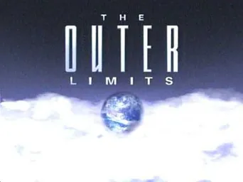

The genetics
The episode is built around human reproductive cloning, used here to replace a loved one rather than to create a new person. The scientist is a grieving husband who misuses his company's technology and breaks the law for personal reasons, after his wife's own reckless self-experiment caused her coma, and the story turns on the consequences of treating a clone as a substitute: once the original wife wakes up, the copy has her own claim to the life she was given. In this way the episode raises the question, common in Outer Limits stories, of whether a duplicate is a person with her own rights, although its almost comic ending, in which the husband clones himself so that each Nora has a partner, sidesteps the dilemma. Its science is speculative: real cloning would produce a genetically identical embryo that would have to develop and grow up, not an adult double, and the episode instead assembles the body from old scans and supplies the mind by uploading recorded memories, which is not genetics at all.
How genetics is portrayed
- Overall portrayal of genetics
- negative The closing toast 'to science' on an Alpine ski holiday with two couples, half of them copies, is a hollow happy ending: a contented life built on duplicates, which reads as dystopian and creepy rather than as a vindication of cloning.
- Outcome of the genetic intervention
- negative The cloning produces two rival Noras; the couple plan to wipe the clone's memory, the two women fight in the lab, and the only 'solution' is yet another clone.
- Dr. Zach Griffiths
- ambivalent Aim: personal, benevolent (positive). The biotech co-founder secretly uses his firm's organ replicator and Nora's stored engrams to clone his comatose wife because he wants her back, then plots with the revived Nora to erase the clone's memory and finally clones himself; a loving husband who breaks the law and 'plays God'.
The story
Zach and Nora Griffiths, scientists played by Peter Outerbridge and Sherilyn Fenn, run a biotech firm with a business partner that is close to producing cloned human organs. Nora has developed a "neuro-mapper" that can copy a mind into a cloned brain, and when their partner orders the program shut down she tests the untried device on herself and suffers a seizure. A year later she lies in a coma, which Zach blames on a drowning accident. Pressed to withdraw life support, he illegally clones her as an adult, with the reluctant help of a colleague, using the company's organ replicator, archived body scans and her stored memories. The clone, who believes she is Nora, grows jealous of the comatose original, and then Nora unexpectedly wakes up. Both women share the same memories and both claim Zach; the couple plan to erase the clone's memory, and the two Noras fight in the lab. Zach's solution is to clone himself: in the final scene the two couples share a skiing holiday and toast "to science".